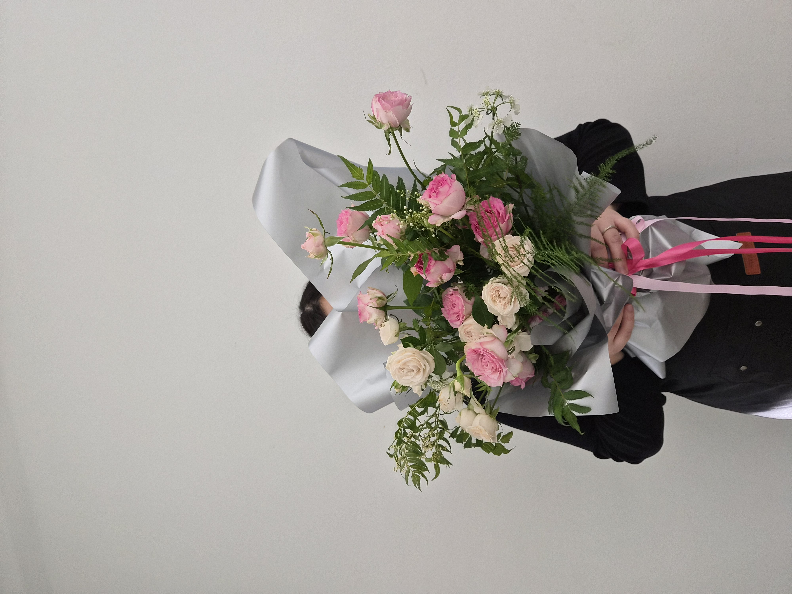
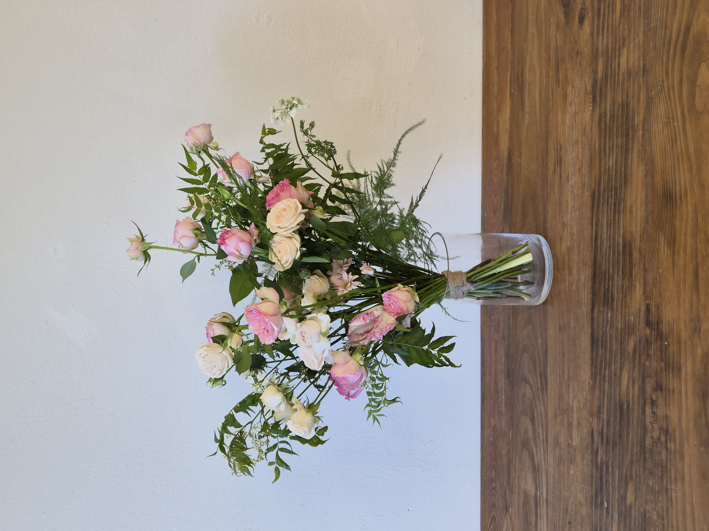

CLASS WORK · HAND-TIED
2026.10.06U-LINE & V-LINE
HAND-TIED BOUQUET
広がる線と高さを生かしたブーケ
07 / CLASS WORK
CONCEPT
OPEN LINES,
SOFT VOLUME.
핑크와 크림 톤의 장미를 중심으로 풍성한 볼륨을 만들고, 신지매와 올라야의 길고 가벼운 선을 좌우와 위쪽으로 확장해 U-line과 V-line의 개방적인 흐름을 표현한 핸드타이드 부케입니다.
중심부는 비교적 밀도 있게 두되 외곽 소재의 높이와 방향을 크게 달리해, 부드러운 색감 안에서도 넓게 퍼지는 실루엣과 리듬이 느껴지도록 구성했습니다.
ピンクとクリームのバラを中心にやわらかなボリュームをつくり、シンジメやオルラヤの軽やかな線を左右と上方向へ広げて、UラインとVラインの開放的な流れを表現したハンドタイドブーケです。中心には適度な密度を持たせながら、外側の花材に大きな高低差と方向性を与え、やさしい色調の中にも広がりのあるシルエットとリズムをつくりました。
COLOR PALETTE
色の構成
BLUSH,
CREAM,
FERN GREEN.
블러시 핑크와 선명한 로즈 핑크를 중심으로 크림 아이보리를 섞어 부드러운 그라데이션을 만들었습니다. 여러 톤의 그린이 넓게 퍼지며 색의 중심을 안정시키고 자연스러운 깊이를 더합니다.
ブラッシュピンクと鮮やかなローズピンクを中心に、クリームアイボリーを重ねてやわらかなグラデーションをつくりました。複数のグリーンが外側へ広がり、色の中心を安定させながら自然な奥行きを加えています。
BLUSH PINK
#E7B5BDROSE PINK
#D85C80CREAM IVORY
#E8DED0FERN GREEN
#647451DEEP LEAF
#40533BMATERIALS
使用花材
스탠다드 장미와 스프레이 장미로 중심의 볼륨과 반복을 만들고, 패럿튤립의 독특한 꽃잎과 올라야의 섬세한 질감으로 변화를 더했습니다. 신지매의 긴 가지와 잎은 작품 바깥으로 뻗으며 전체 실루엣을 넓고 자연스럽게 확장합니다.
スタンダードローズとスプレーバラで中心のボリュームと繰り返しをつくり、パーロット咲きチューリップの特徴的な花びらとオルラヤの繊細な質感で変化を加えました。シンジメの長い枝と葉が外側へ伸び、全体のシルエットを広く自然に広げています。
패럿튤립
パーロット咲きチューリップ
스탠다드 장미
スタンダードローズ
스프레이 장미
スプレーバラ
올라야
オルラヤ
신지매
シンジメ
BLUSH · ROSE
CREAM · FERN GREEN
ブラッシュとローズを中心に、
クリームとグリーンを重ねた配色。
COMPOSITION
構成とバランス
OPEN,
RISE,
SPREAD.
장미와 스프레이 장미를 중심 가까이에 반복해 안정적인 볼륨을 만들고, 위쪽 꽃은 높이를 달리해 V자 형태로 시선을 끌어올렸습니다.
신지매와 올라야는 좌우로 넓게 펼쳐 U자 형태의 흐름을 만들며 중심의 덩어리가 답답해 보이지 않도록 외곽에 여백을 형성합니다.
선 소재를 완전히 대칭으로 맞추기보다 서로 다른 길이와 각도로 배치해, U와 V의 기본 방향을 유지하면서도 자연스러운 움직임이 남도록 구성했습니다.
バラとスプレーバラを中心近くに繰り返して安定したボリュームをつくり、上部の花には高低差をつけてV字の方向へ視線を引き上げました。シンジメとオルラヤは左右へ広げてU字の流れをつくり、中心のマスが重く見えないよう外側に余白を残しています。完全な左右対称にはせず、異なる長さと角度を使うことで自然な動きを残しました。
FINAL VIEW
完成したかたち

포장을 벗긴 상태에서는 중앙의 장미 볼륨과 좌우로 벌어지는 신지매, 위쪽으로 올라가는 꽃의 높이 차이가 더욱 분명하게 드러납니다. 중심에서 바깥으로 시선이 자연스럽게 확장되며 U와 V 방향의 선이 한 작품 안에서 함께 읽힙니다.
ラッピングを外すと、中心のバラのボリュームと左右へ広がるシンジメ、上へ伸びる花の高低差がより明確に見えます。中心から外側へ視線が自然に広がり、UとVの方向性が一つの作品の中で同時に感じられます。
REFLECTION
制作を振り返って
WIDTH,
HEIGHT,
FLOW.
한 작품 안에서 높이와 폭을 동시에 다루며, 외곽의 선이 전체 실루엣을 얼마나 크게 변화시키는지 확인한 작업입니다. 중심의 꽃을 안정적으로 유지하면서도 그린과 선 소재를 충분히 밖으로 확장해 보는 연습이 되었습니다.
선이 많아질수록 방향이 서로 경쟁할 수 있기 때문에, 어느 선을 강조하고 어느 부분을 비워 둘지 선택하는 것이 중요했습니다. 다음 작업에서는 중심의 밀도와 외곽의 선 사이에 더 명확한 우선순위를 두어 전체 흐름을 단순하고 선명하게 정리하고자 합니다.
一つの作品の中で高さと幅を同時に扱い、外側のラインがシルエット全体を大きく変えることを確認した制作です。中心の花を安定させながら、グリーンやライン素材を十分に外へ広げる練習にもなりました。線が増えるほど方向が競合しやすいため、どの線を見せ、どこに余白を残すかを選ぶことの重要性を学びました。
중심의 밀도와 외곽선의 우선순위를 정리해 U와 V의 흐름을 더욱 명확하게 만들기